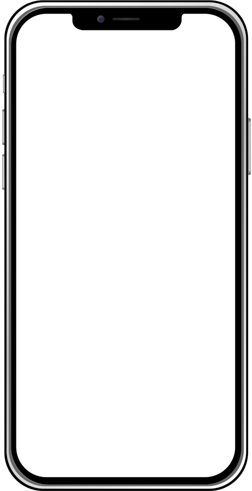

TEAM: Bihan Li, Haiyun Wu, Tianjiao Wang INSTRUCTOR: Haoran Li TIME: 2.5 weeks TYPE: Academic project MY ROLE: UX designer/Graphic designer/Strategist/ Researcher
How make potential donors be willing to contribute even though the infectious patients stay anonymous?
Using Federated Blockchain Technology to raise donors' sense of trust and establish emotional connections with donors.

Apply blockchain technology to make sure the process is justice and provide detailed record, so the potential donors would believe in the platform.
Provide emotional feedback from patients without revealing their identity information to let donors feel that their benevolence really makes a difference.
In the "World Giving Index", China ranked 95th in 2021 and 142nd in 2018. always in the group with the least willingness to donate. And it is caused by various reasons:
It is even much harder for infected patients to receive help through a donation in China. In 2016, only 1.4% of the total contributions in China were targeted at providing financial aid to infected patients. However, the infectious patients in China who need financial aid are actually a large group, especially the patients infected with chronic infectious diseases.